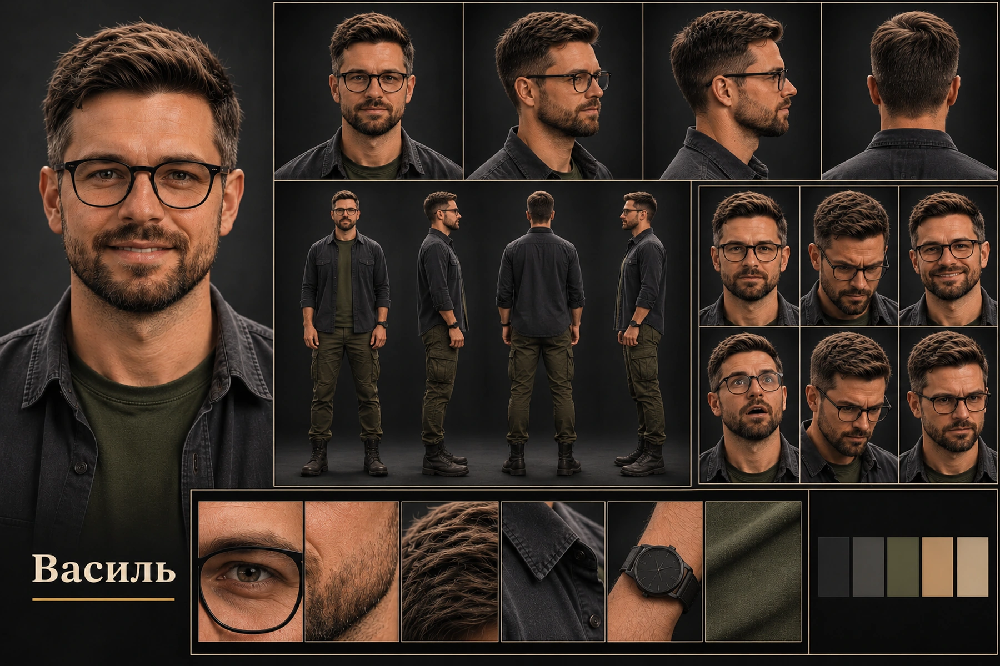

ОСНОВНА ІНФОРМАЦІЯ
Василь
Василь — новоініційований характерник, який допомагає налагоджувати зв’язки між людьми та спільнотами.

КАНОН І РОЛЬ У СЮЖЕТІ
Підтверджені відомості
У розділі «День 10. Дід Микола. Меценат» Василь супроводжує Леха й діда Миколу на зустріч із Євгеном, потенційним меценатом. Пізніше, у фрагменті «Василь. Мітинг у Харкові», він свідомо їде містом без порталу, спостерігає за настроями людей і аналізує суспільну напругу. Текст показує його уважним до реального життя поза звітами та аналітичними системами.